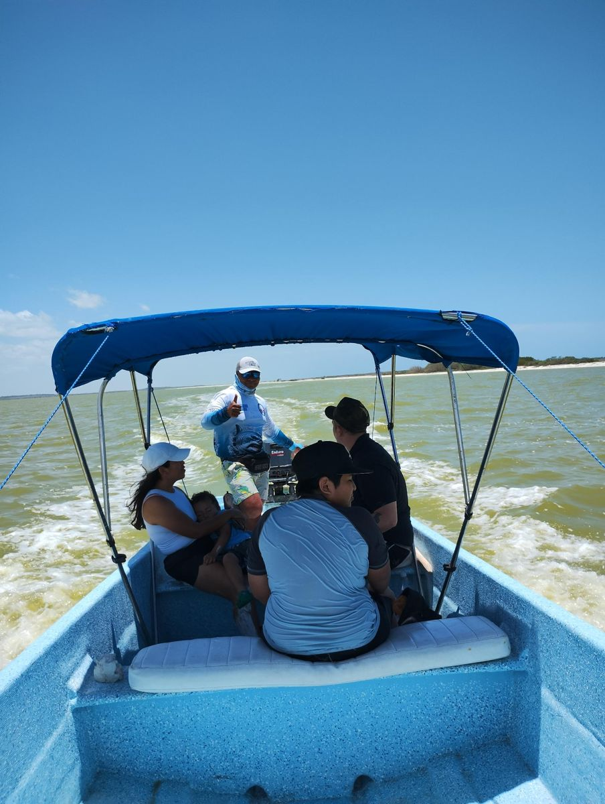

Tour de pesca en El Cuyo: pesca de fondo y pesca de orilla | Explora El Cuyo Tours
Reserva pesca en lancha en El Cuyo, Yucatán. Elige pesca de fondo por $5,500 MXN o pesca de orilla por $4,500 MXN. Salidas a las 6 o 7 a. m.

Pesca de fondo
La embarcación se aleja un poco de la costa para llegar a puntos de pesca seleccionados por los lancheros, incluidas zonas de piedras. Precio: $5,500 MXN.
Pesca de orilla
Una salida para pescar cerca de la costa, sin alejarse demasiado de la orilla. Precio: $4,500 MXN.
Horario y condiciones
Las salidas pueden ser a las 6:00 a. m. o a las 7:00 a. m. La hora de regreso, duración y capacidad se confirman con el lanchero al reservar. La captura depende de las condiciones y no se puede garantizar.
Qué incluye
- Botellas de agua purificada.
- Frutas del día.
Qué no incluye o debes considerar
- Equipo, carnada u otros servicios que no hayan sido confirmados al hacer la reservación.
- La captura de peces no está garantizada.
Los horarios y tiempos de recorrido son aproximados cuando así se indica y pueden cambiar por clima, navegación, condiciones naturales y operación del proveedor. Confirma los detalles y disponibilidad antes de reservar.
Consultar disponibilidad por WhatsApp Volver a Explora El Cuyo Tours